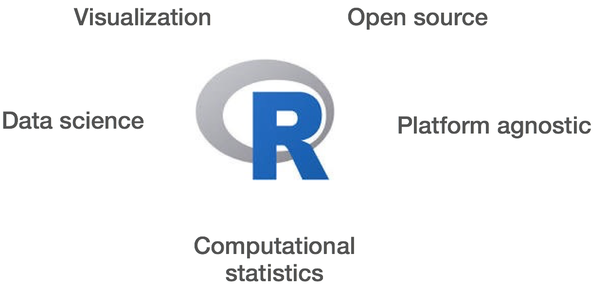
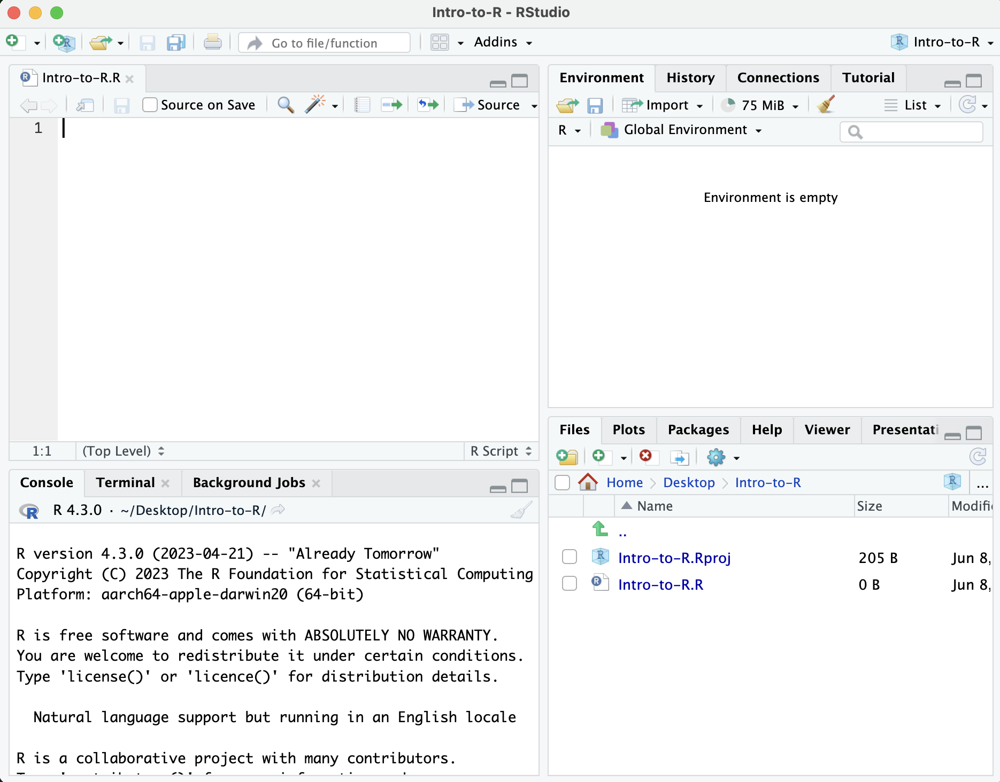
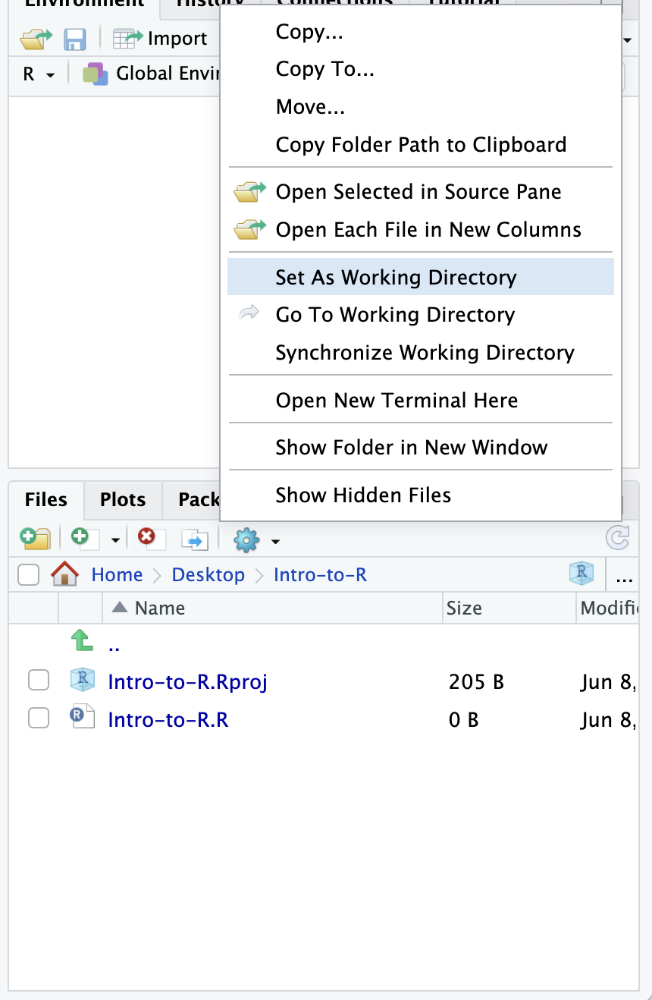
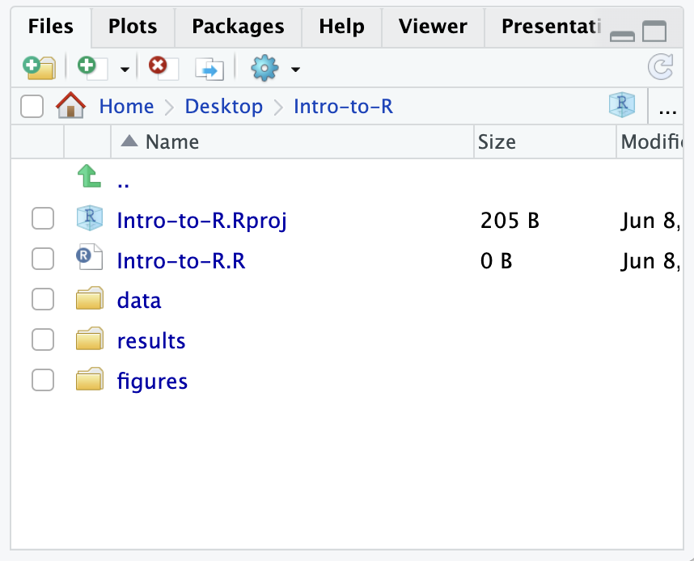
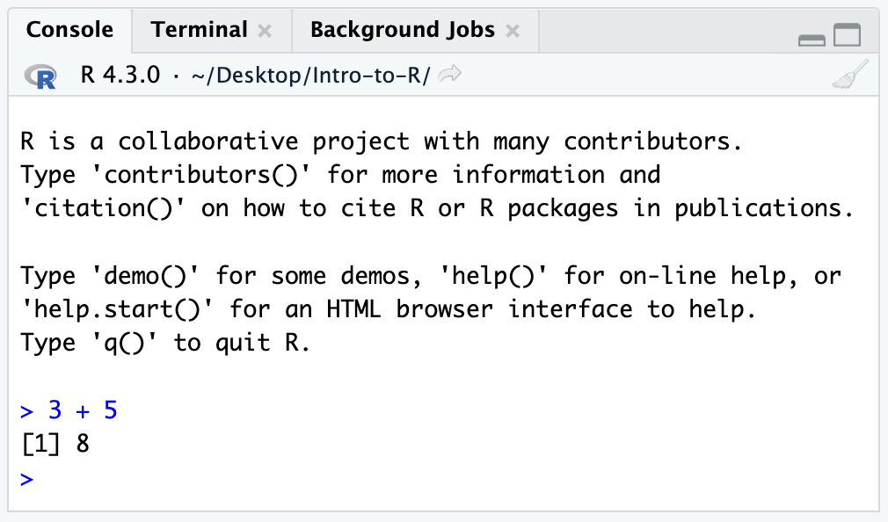
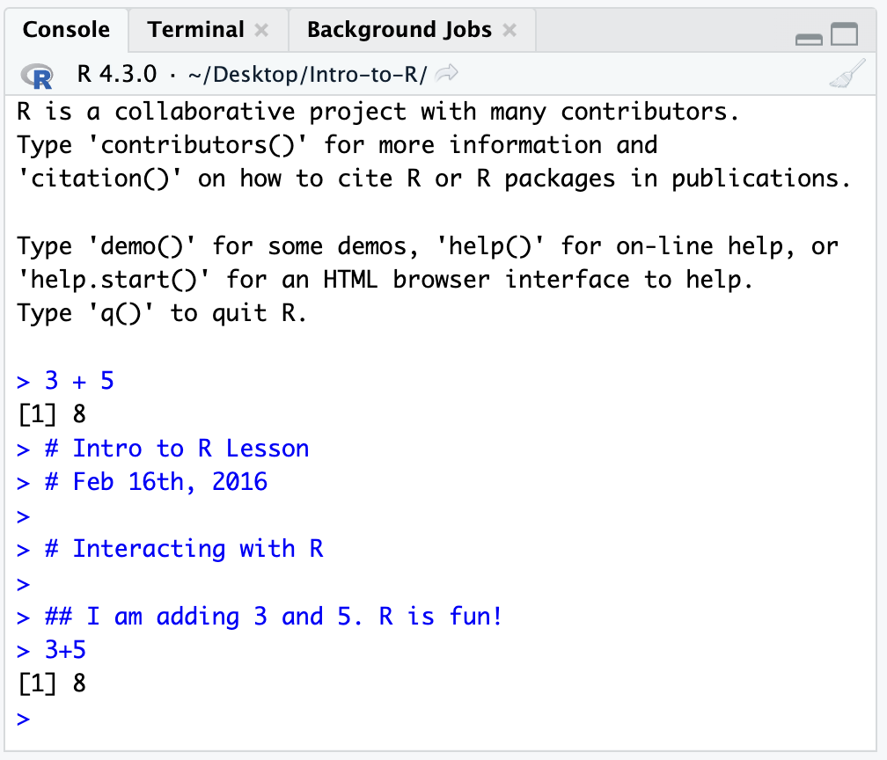

Introdução Básica ao R e RStudio
BO304
Tempo aproximado: 15 minutos
Objetivos de Aprendizagem
- Descrever o R e o RStudio.
- Interagir com o R usando o RStudio.
- Utilizar os diversos recursos do RStudio.
O que é R?
Um equívoco comum é pensar que o R é uma linguagem de programação, mas na verdade ele é muito mais do que isso. Pense no R como um ambiente para computação estatística e gráficos, que reúne diversos recursos para fornecer funcionalidades poderosas.
O ambiente R combina:
- manuseio eficiente de grandes volumes de dados
- coleção de ferramentas integradas
- recursos gráficos
- linguagem de programação simples e eficaz
Por que usar R?

R é um ambiente poderoso e extensível. Ele possui uma ampla variedade de capacidades para estatística, análise geral de dados e visualização.
- Manipulação, organização e armazenamento de dados
- Ampla variedade de métodos estatísticos e técnicas gráficas disponíveis
- Fácil de instalar em qualquer plataforma e de usar (e é gratuito!)
- Código aberto com uma comunidade grande e em constante crescimento
O que é o RStudio?
O RStudio é um Ambiente de Desenvolvimento Integrado (IDE) de código aberto e disponível gratuitamente. O RStudio fornece um ambiente com muitos recursos que tornam o uso do R mais fácil e é uma excelente alternativa ao uso do R diretamente no terminal.

- Interface gráfica, não apenas um prompt de comando
- Excelente ferramenta de aprendizado
- Gratuito para uso acadêmico
- Independente de plataforma
- Código aberto
Criando um novo diretório de projeto no RStudio
Vamos criar um novo diretório de projeto para a aula de hoje, Introdução ao R.
- Abra o RStudio
- Vá ao menu
Filee selecioneNew Project.
- Na janela
New Project, escolhaNew Directory. Em seguida, escolhaNew Project. Nomeie o novo diretório comoIntro-to-Re, em “Create the project as subdirectory of:”, selecione a Área de Trabalho (Desktop) ou outro local de sua preferência.
- Clique em
Create Project.

- Após o projeto ser criado, caso ele não seja aberto automaticamente no RStudio, vá ao menu
File, selecioneOpen Projecte escolhaIntro-to-R.Rproj.
- Quando o RStudio abrir, você verá três painéis na janela.
- Vá ao menu
File, selecioneNew Filee depoisR Script.
- Vá ao menu
File, selecioneSave As..., digiteIntro-to-R.Re clique emSave.

A interface do RStudio agora deve se parecer com a imagem abaixo.

Interface do RStudio
A interface do RStudio possui quatro painéis principais:
- Console: onde você pode digitar comandos e ver as saídas. O console é tudo o que você veria se executasse o R pela linha de comando sem o RStudio.
- Editor de scripts: onde você pode digitar comandos e salvá-los em arquivos. Você também pode enviar os comandos para execução no console.
- Environment/History: o ambiente mostra todos os objetos ativos e o histórico mantém o registro de todos os comandos executados no console.
- Files/Plots/Packages/Help
Organizando seu diretório de trabalho e configuração inicial
Visualizando seu diretório de trabalho
Antes de organizarmos nosso diretório de trabalho, vamos verificar onde ele está localizado digitando no console:
getwd()
Seu diretório de trabalho deve ser a pasta Intro-to-R criada quando você criou o projeto. O diretório de trabalho é onde o RStudio irá procurar automaticamente por arquivos importados e onde ele salvará automaticamente os arquivos criados, a menos que seja especificado o contrário.
Você pode visualizar seu diretório de trabalho selecionando a aba Files na janela Files/Plots/Packages/Help.

Se você quiser escolher um diretório diferente como diretório de trabalho, navegue até outra pasta na aba Files, clique no menu suspenso More e selecione Set As Working Directory.

Estruturando seu diretório de trabalho
Para organizar seu diretório de trabalho para uma análise específica, você deve separar os dados originais (dados brutos) dos conjuntos de dados intermediários. Por exemplo, você pode criar um diretório data/ para armazenar os dados brutos, um diretório results/ para conjuntos de dados intermediários e um diretório figures/ para os gráficos que serão gerados.

Crie esses três diretórios dentro do seu diretório de trabalho clicando em New Folder na aba Files.
Ao finalizar, seu diretório de trabalho deverá se parecer com:

Adicionando arquivos ao seu diretório de trabalho
Existem alguns arquivos que serão utilizados nas próximas aulas, e você pode acessá-los usando os links abaixo. Clique com o botão direito no link e selecione “Salvar link como…”. Escolha ~/Desktop/Intro-to-R/data como destino. Esses arquivos serão discutidos mais adiante na aula.
- Baixe o arquivo de contagens normalizadas clicando com o botão direito em este link
- Baixe o arquivo de metadados usando este link
NOTA: Se os arquivos forem baixados automaticamente para outro local do seu computador, você pode movê-los para o diretório de trabalho usando o explorador de arquivos (fora do RStudio) ou navegando até eles pela aba
Filesno painel inferior direito do RStudio.
Configuração inicial
Esta é uma tarefa de organização. Vamos escrever linhas longas de código no editor de scripts e queremos garantir que as linhas sejam quebradas automaticamente, evitando a necessidade de rolar horizontalmente para visualizar todo o código.
Clique em Code no topo da tela do RStudio e selecione Soft Wrap Long Lines no menu suspenso.

Interagindo com o R
Agora que a interface e a estrutura de diretórios estão configuradas, vamos começar a usar o R! Existem duas formas principais de interagir com o R no RStudio: usando o console ou o editor de scripts (arquivos de texto simples que contêm seu código).
Janela do console
A janela do console (painel inferior esquerdo) é onde o R aguarda comandos e exibe os resultados. Comandos digitados diretamente no console serão perdidos quando a sessão for encerrada.
Vamos testar:
3 + 5

Editor de scripts
A melhor prática é inserir os comandos no editor de scripts e salvar o script. Recomenda-se comentar amplamente os comandos usando #, garantindo um registro completo do que foi feito.
O editor de scripts do RStudio permite enviar a linha atual ou o texto selecionado para o console do R clicando no botão Run no canto superior direito do editor, ou usando o atalho Ctrl + Enter.

Como alternativa, você pode executar pressionando Ctrl + Return/Enter.

O comando será executado no console e o resultado exibido.

O que acontece se executarmos o mesmo comando sem o símbolo de comentário #?
I am adding 3 and 5. R is fun!
3 + 5
Agora o R tenta interpretar essa frase como um comando, o que resulta em erro. O console exibirá: “Error: unexpected symbol in ‘I am’”, indicando que o interpretador do R não reconheceu o comando.
Prompt de comando do console
Interpretar o prompt do console ajuda a entender quando o R está pronto para aceitar comandos:
Console pronto para aceitar comandos: >
Quando o console exibe >, o R está aguardando novos comandos.
Console aguardando mais dados: +
Indica que o comando ainda não foi concluído, geralmente por parênteses ou aspas não fechados.
Interrompendo um comando: esc
Clique no console e pressione esc para cancelar o comando atual e retornar ao prompt >.
Boas práticas
Antes de avançar para conceitos mais complexos, destacamos algumas boas práticas ao trabalhar com R:
- Código e fluxo de trabalho tornam-se mais reprodutíveis quando tudo é documentado. Todo o código deve ser escrito no editor de scripts e salvo em arquivos, em vez de ser executado apenas no console.
- O console do R deve ser usado principalmente para inspeção de objetos, testes rápidos e obtenção de ajuda.
- Use
#para comentar. Comente de forma abundante nos scripts. Um atalho útil éCtrl + Shift + Cpara comentar blocos inteiros.
Esta aula foi desenvolvida por membros da equipe do Harvard Chan Bioinformatics Core (HBC). Material de acesso aberto distribuído sob a licença Creative Commons Attribution (CC BY 4.0).
- Os materiais utilizados nesta aula foram adaptados de trabalhos do Data Carpentry (http://datacarpentry.org/), disponibilizados sob a licença Creative Commons Attribution (CC BY 4.0).